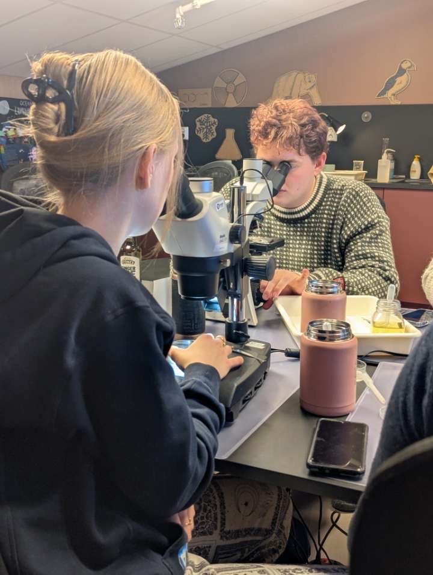
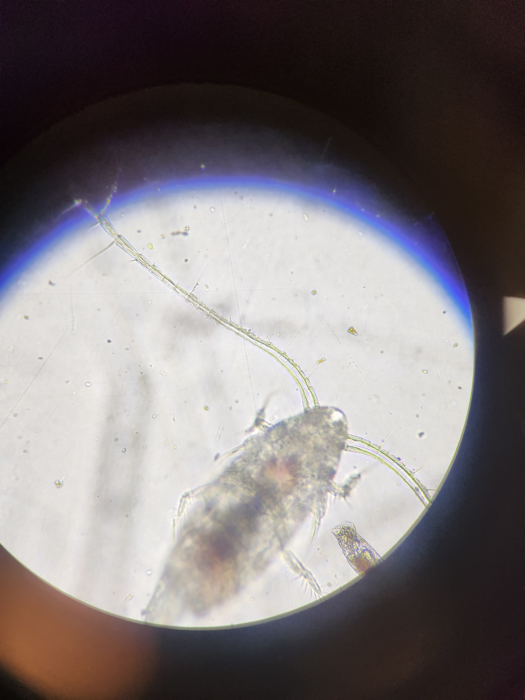
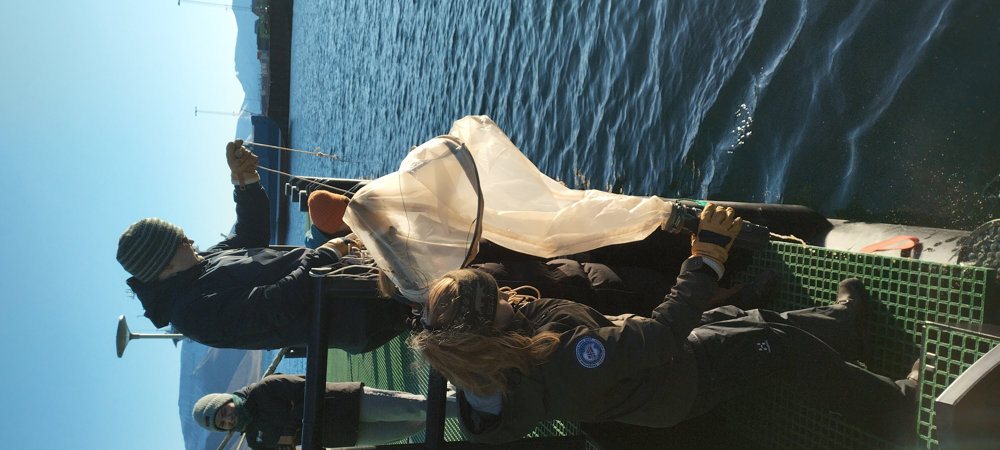

Plankton-prosjekt
Intro
Forskerklassen har et prosjekt i sammarbeid med noen andre. De tar da planktonprøver
ca. hver måned tror eg på kaien. De har plantonprøver med et plankton nett og ser på de i
mikroskop.
69
Antall prøver tatt
1420
Antall bilder tatt av planton
676
Antall ganger forsker har klagd på plankton
Detaljert plan over hvordan ta en planktonprøve
Klag
Det er viktig å klage på plankton for ingen tør å innrømme at det er gøy.
Gå
Så må man gå bort til kaien, noe som tar litt tid fordi det e et stykke å gå.
Ta prøvene
Deretter må man ta prøvene med hjelp av et planktonnett som man drar i vannet for å plukke opp plankton.
Se på planton
Til slutt må man se på planktonene gjennom mikroskop. Det er ofte lurt å drugge dei ned sånn at dei beveger seg saktere for da er det enklere å se dei.
Resultater
Plankton e litt kjedelig, men det går fint.
Bilder


